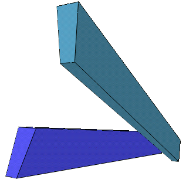

org.freehep.j3d
Class Trapezoid
java.lang.Object
 javax.media.j3d.SceneGraphObject
javax.media.j3d.Node
javax.media.j3d.Leaf
javax.media.j3d.Shape3D
org.freehep.j3d.Solid
org.freehep.j3d.Trapezoid
javax.media.j3d.SceneGraphObject
javax.media.j3d.Node
javax.media.j3d.Leaf
javax.media.j3d.Shape3D
org.freehep.j3d.Solid
org.freehep.j3d.Trapezoid
- Direct Known Subclasses:
- G4Box, G4Para, G4Trap, G4Trd
- public class Trapezoid
- extends Solid
General Trapezoid. All angles are in degrees, all dimensions
are full dimensions (not half dimensions).

- Version:
- 2.1.0
- Author:
- J.Hrivnac
- Source Code:
- Trapezoid.java
| Fields inherited from class javax.media.j3d.Shape3D |
ALLOW_APPEARANCE_OVERRIDE_READ, ALLOW_APPEARANCE_OVERRIDE_WRITE, ALLOW_APPEARANCE_READ, ALLOW_APPEARANCE_WRITE, ALLOW_COLLISION_BOUNDS_READ, ALLOW_COLLISION_BOUNDS_WRITE, ALLOW_GEOMETRY_READ, ALLOW_GEOMETRY_WRITE |
| Fields inherited from class javax.media.j3d.Node |
ALLOW_AUTO_COMPUTE_BOUNDS_READ, ALLOW_AUTO_COMPUTE_BOUNDS_WRITE, ALLOW_BOUNDS_READ, ALLOW_BOUNDS_WRITE, ALLOW_COLLIDABLE_READ, ALLOW_COLLIDABLE_WRITE, ALLOW_LOCAL_TO_VWORLD_READ, ALLOW_PICKABLE_READ, ALLOW_PICKABLE_WRITE, ENABLE_COLLISION_REPORTING, ENABLE_PICK_REPORTING |
|
Constructor Summary |
Trapezoid(double x,
double y,
double z,
javax.media.j3d.Appearance appearance)
Create box. |
Trapezoid(double xm,
double xp,
double ym,
double yp,
double z,
javax.media.j3d.Appearance appearance)
Create straigth trapezoid. |
Trapezoid(double xm,
double xp,
double ym,
double yp,
double z,
double inclXZ,
double inclYZ,
javax.media.j3d.Appearance appearance)
Create trapezoid without declinations. |
Trapezoid(double xmu,
double xmd,
double xpu,
double xpd,
double ym,
double yp,
double z,
double inclXZ,
double inclYZ,
double declYm,
double declYp,
javax.media.j3d.Appearance appearance)
Create general trapezoid. |
| Methods inherited from class javax.media.j3d.Shape3D |
addGeometry, cloneNode, duplicateNode, getAllGeometries, getAppearance, getAppearanceOverrideEnable, getBounds, getCollisionBounds, getGeometry, getGeometry, indexOfGeometry, insertGeometry, intersect, intersect, intersect, numGeometries, removeAllGeometries, removeGeometry, removeGeometry, setAppearance, setAppearanceOverrideEnable, setCollisionBounds, setGeometry, setGeometry |
| Methods inherited from class javax.media.j3d.Node |
cloneTree, cloneTree, cloneTree, cloneTree, cloneTree, cloneTree, getBoundsAutoCompute, getCollidable, getLocalToVworld, getLocalToVworld, getParent, getPickable, setBounds, setBoundsAutoCompute, setCollidable, setPickable |
| Methods inherited from class javax.media.j3d.SceneGraphObject |
clearCapability, clearCapabilityIsFrequent, duplicateSceneGraphObject, getCapability, getCapabilityIsFrequent, getUserData, isCompiled, isLive, setCapability, setCapabilityIsFrequent, setUserData, updateNodeReferences |
| Methods inherited from class java.lang.Object |
clone, equals, finalize, getClass, hashCode, notify, notifyAll, toString, wait, wait, wait |
Trapezoid
public Trapezoid(double xmu,
double xmd,
double xpu,
double xpd,
double ym,
double yp,
double z,
double inclXZ,
double inclYZ,
double declYm,
double declYp,
javax.media.j3d.Appearance appearance)
- Create general trapezoid.
- Parameters:
xmu - length of x-edge at -z/2 and +ym/2xmd - length of x-edge at -z/2 and -ym/2xpu - length of x-edge at +z/2 and +ym/2xpd - length of x-edge at +z/2 and -ym/2ym - length of y-edge at -z/2yp - length of y-edge at +z/2z - length of z-edgeinclXZ - angle [deg] of trapezoid z-axis with the real z-axis in XZ planeinclYZ - angle [deg] of trapezoid z-axis with the real z-axis in YZ planedeclYm - angle [deg] of xz-plane at -z/2 with y-axisdeclYp - angle [deg] of xz-plane at +z/2 with y-axisappearance - object' Appearance- Preconditions:
- inclXZ < 90 && inclXZ > -90, inclYZ < 90 && inclYZ > -90, declYm < 90 && declYm > -90, declYp < 90 && declYp > -90
Trapezoid
public Trapezoid(double xm,
double xp,
double ym,
double yp,
double z,
double inclXZ,
double inclYZ,
javax.media.j3d.Appearance appearance)
- Create trapezoid without declinations.
Trapezoid
public Trapezoid(double xm,
double xp,
double ym,
double yp,
double z,
javax.media.j3d.Appearance appearance)
- Create straigth trapezoid.
Trapezoid
public Trapezoid(double x,
double y,
double z,
javax.media.j3d.Appearance appearance)
- Create box.
Copyright © 2000-2004 FreeHEP, All Rights Reserved.